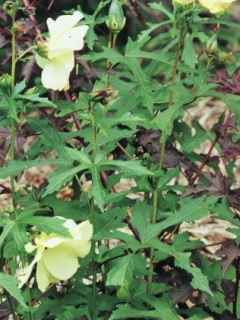

Back to Top
DIAGNOSTIC FEATURES

Annual or perennial herbs. 1-2 m tall, with sparse, long and hispid hairs.
Stipule lanceolate, 1-1.5 cm; petiole 6-18 cm, with sparse, long and hispid
hairs; leaf blade palmately 5-9-parted, 15-30 cm in diam., lobes oblong
lanceolate, 8-18 ´ 1-6 cm, with sparse long and
hirsute hairs on abaxial and adaxial surfaces, margin robust obtusely serrate.
Flowers solitary and axillary in the upper part of branchlets; bracteoles 4-5,
ovate lanceolate, 15-25 ´ 4-5 mm, with sparse, long
and hispid hairs. Calyx spathaceous, 5-lobed, nearly entire, shorter than
bracteoles, puberulous, fallen at fruiting. Corolla larger, yellowish, purple at
base of adaxial surface, ca. 12 cm in diam. Staminal column 1.5-2 cm, anthers
nearly sessile; stigma purple black, spatulate-disk-shaped. Capsule ovate
ellipsoid, 4-5 cm long, 2.5-3 cm in diam., hirsute. Seeds numerous, reniform,
with several striates consisting of hairs.
Back to Top
REPRODUCTIVE BIOLOGY

Delightful okra relative displays 6" pale yellow blossoms with a dark
eye. Olive green fingered foliage is attractive. Interesting seed pods develop
after the blossoms drop.
Breeding System :
Phenology :
The flowering occurs during August -
October and in September - December.
Pollinators:
Seed Biology :
Seed Germination :
Seed - sow March in a greenhouse and plant out after the last expected frosts.
Can also be sown in situ in late April in warm summer areas.
Cultivation:
Easily grown in any well-drained soil in a sunny position. A perennial plant,
it is tender in the temperate zone but can be grown outdoors as an annual, flowering
well in its first year and setting seed. Plants will occasionally over winter in a cold greenhouse. It grows well in an ornamental vegetable garden.
Back to Top
MAJOR PESTS & DISEASES
Pests:
Diseases:
Back to Top
.jpg){kind=link}